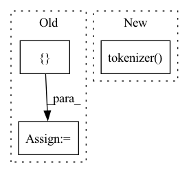

Pattern ID :22054
Before Change
attn_mask.append(encodings_dict["attention_mask"])
max_length = max([len(idx) for idx in text_idx])
text_idx = [idx + [self.padding_token_idx] * (max_length - len(idx)) for idx in text_idx]
attn_mask = [mask + [ 0After Change
attn_masks = []
for text in text_sequence:
sentence = " ".join([self.sos_token] + text + [self.eos_token])
encoding_dict = self.tokenizer( sentence,
max_length=self.max_seq_length,
padding="max_length",
truncation=True,
return_tensors="pt")
input_ids.append(encoding_dict["input_ids"])
attn_masks.append(encoding_dict["attention_mask"])
input_ids = torch.cat(input_ids, dim=0).to(self.device)
attn_masks = torch.cat(attn_masks, dim=0).to(self.device)In pattern: SUPERPATTERN
Frequency: 5
Non-data size: 3
Instances Fragment ID: 69877594
Project Name: rucaibox/textbox
Commit Name: 9c7994602989cced6709bf6ec43a092f69a1d6cd
Time: 2020-12-08
Author: lijunyi@ruc.edu.cn
File Name: textbox/model/LM/gpt2.py
M Class Name: GPT2
N Class Name: GPT2
M Method Name: calculate_loss(3)
N Method Name: calculate_loss(3)
M Parent Class: UnconditionalGenerator
N Parent Class: UnconditionalGenerator
M File Name: textbox/model/LM/gpt2.py
N File Name: textbox/model/LM/gpt2.py
M Start Line: 67
M End Line: 91
N Start Line: 72
N End Line: 95
Before Change
attn_mask.append(encodings_dict["attention_mask"])
max_length = max([len(idx) for idx in text_idx])
text_idx = [idx + [self.padding_token_idx] * (max_length - len(idx)) for idx in text_idx]
attn_mask = [mask + [ 0After Change
attn_masks = []
for text in text_sequence:
sentence = " ".join([self.sos_token] + text + [self.eos_token])
encodings_dict = self.tokenizer( sentence,
max_length=self.max_seq_length,
padding="max_length",
truncation=True,
return_tensors="pt")
input_ids.append(encodings_dict["input_ids"])
attn_masks.append(encodings_dict["attention_mask"])
input_ids = torch.cat(input_ids, dim=0).to(self.device)
attn_masks = torch.cat(attn_masks, dim=0).to(self.device) Fragment ID: 69877592
Project Name: rucaibox/textbox
Commit Name: 9c7994602989cced6709bf6ec43a092f69a1d6cd
Time: 2020-12-08
Author: lijunyi@ruc.edu.cn
File Name: textbox/model/LM/gpt2.py
M Class Name: GPT2
N Class Name: GPT2
M Method Name: calculate_nll_test(3)
N Method Name: calculate_nll_test(3)
M Parent Class: UnconditionalGenerator
N Parent Class: UnconditionalGenerator
M File Name: textbox/model/LM/gpt2.py
N File Name: textbox/model/LM/gpt2.py
M Start Line: 97
M End Line: 118
N Start Line: 104
N End Line: 124
Before Change
self.converter = MusicConverter()
def __call__(self, mode: str, to_score: bool = False):
modes = [ "conditional", "unconditional-greedy", "unconditional-topk"After Change
assert prompt is not None or path is not None, f"Expect either {logi("prompt")} or {logi("path")}"
if prompt is None:
prompt = self.converter.mxl2str(path)
inputs = self.tokenizer( prompt, return_tensors="pt")
outputs = self.model.generate(
**inputs, max_length=self.max_len
)
ic(outputs.shape) Fragment ID: 69877598
Project Name: stefanheng/symbolic-music-generation
Commit Name: 270b454271f507d9144a8de7bac33f6ca7c46722
Time: 2022-04-02
Author: 43276957+SpongeBobBang@users.noreply.github.com
File Name: musicnlp/models/evaluate.py
M Class Name: MusicGenerator
N Class Name: MusicGenerator
M Method Name: __call__(4)
N Method Name: __call__(3)
M Parent Class:
N Parent Class:
M File Name: musicnlp/models/evaluate.py
N File Name: musicnlp/models/evaluate.py
M Start Line: 31
M End Line: 58
N Start Line: 30
N End Line: 69
Before Change
def preprocess(self, input_text):
inputs = self.tokenizer(input_text)
inputs = left_padding(inputs, self.tokenizer.pad_token_id)
input_map = {
"input_ids": np.array(inputs["input_ids"], dtype="int64"),
}
return input_map
def infer(self, input_map):
results = self.model(paddle.to_tensor(input_map["input_ids"]))After Change
self.model.eval()
def preprocess(self, input_text):
inputs = self.tokenizer(
input_text,
return_tensors="np",
padding=True,
max_length="max_length",
return_attention_mask=False,
return_token_type_ids=False,
)
inputs_tensor = {}
for key, value in inputs.items():
inputs_tensor[key] = paddle.to_tensor(value)
return inputs_tensor Fragment ID: 69877596
Project Name: paddlepaddle/paddlenlp
Commit Name: cd9b90e2339a664617b607015d8735e0d430dce2
Time: 2023-03-29
Author: 1435130236@qq.com
File Name: examples/language_model/bloom/predict_generation.py
M Class Name: Predictor
N Class Name: Predictor
M Method Name: preprocess(2)
N Method Name: preprocess(2)
M Parent Class: object
N Parent Class: object
M File Name: examples/language_model/bloom/predict_generation.py
N File Name: examples/language_model/bloom/predict_generation.py
M Start Line: 97
M End Line: 101
N Start Line: 55
N End Line: 66
Before Change
indexed_tokens = self.tokenizer.convert_tokens_to_ids(tokenized_text)
// Convert inputs to PyTorch tensors
preprocessed_sentence = torch.tensor([ indexed_tokensAfter Change
https://huggingface.co/transformers/model_doc/bert.html//transformers.BertTokenizer
encoding = self.tokenizer( raw_sentence,
pad_to_max_length=True,
return_tensors="pt"
)
return encoding
def preprocess_many(self, raw_sentences):
Preprocess multiple sentences - tokenization and determining of token ids. Fragment ID: 69877601
Project Name: bluebrain/search
Commit Name: 6eb30c8b3e77791ee4e407dd19d7a5e08fe5e132
Time: 2020-09-04
Author: jankrepl@yahoo.com
File Name: src/bbsearch/embedding_models.py
M Class Name: SBioBERT
N Class Name: SBioBERT
M Method Name: preprocess(2)
N Method Name: preprocess(2)
M Parent Class: EmbeddingModel
N Parent Class: EmbeddingModel
M File Name: src/bbsearch/embedding_models.py
N File Name: src/bbsearch/embedding_models.py
M Start Line: 94
M End Line: 105
N Start Line: 141
N End Line: 145